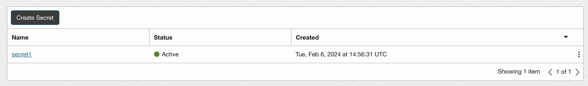

Intro
Secrets represent credentials such as passwords, certificates and any other confidential information. OCI Vault service provides efficient mechanism to manage them efficiently in Oracle Cloud Infrastructure.
For the detailed description of the service please refer to an official documentation. This article is intended to present some selected patterns of usage with the focus on secrets management.
Prerequisites
To work with secrets we need to have a Vault and Master Encryption Key (which is used to encrypt secrets).
Then we can create our secret (for example password to a datbase or API key): 
Each secret is automatically assigned a secret version. We control lifecycle of the secret by creating and managing its versions.
In the screenshot below we can see the list of versions for a given secret. Version number 4 is the current version, which contains the actual value.
Advantages
There are some obvious advantages of using OCI Vault:
-
Centralized management of secrets and their lifecyles (rotation) - instead of keeping them scattered across different services and environments, we can store them in one place.
-
Secure storage of secrets - secrets are stored in a secure manner, encrypted with a Master Encryption Key.
-
Compliance with security standards. This includes the concept of compliance inheritance where a provider may have parts of their service certified as compliant which removes this from the audit scope of the customer, but the customer is still responsible for the compliance of everything they build on top of the provider.
-
Note: Although Vault uses HSMs that meet Federal Information Processing Standards (FIPS) 140-2 Security Level 3 security certification to protect the keys, the secrets are stored on the server.
-
-
Access control - we can define who can access the secrets and what they can do with them.
-
Audit trail - we can track who accessed the secrets and when.
-
Set of SDKs and APIs - we can use them to automate the management of secrets.
Last but not least, there is one more powerful capability of OCI Vault - integration with other OCI services. I will cover this in the next section.
Integration with other OCI services
Traditional approach
Traditionally, when we need to use a secret in our application, we store it in configuration file or environment variable and then use it in our code. It might be as simple as that:
user=XXXX
password=XXXThis approach is of course security anti-pattern and should be avoided at any cost. Let’s see how we can improve it by using Vault.
Once we switch to Vault, we can retrieve the secret from the Vault and then use it in our code. It means that, in our example, we don’t store password in configuration file any more. However, we need to somehow authenticate to the Vault to retrieve the secret. And we end up with something like this in our configuration file:
[DEFAULT]
user=ocid1.user.oc1..<unique_ID>
key_file=~/.oci/oci_api_key.pem- Note
-
Format depends on the SDK we use (above example comes from OCI CLI) but the information we need to provide is always the same.
This is a step forward but still not perfect. We need to store the key file on the server and we need to manage it. We also need to manage the user and its permissions.
Can we do any better? Yes, we can!
New approach
Let’s use OCI Vault to store the secret and then use a conecept known as OCI Dynamic Groups to manage access to the secret.
Step 1: Create a dynamic group
Dynamic groups are a way to define a group of instances or other resources that match certain criteria. Later, we can use them to define who can access the secret.
For example, to create dynamic group that includes all instances in a given compartment, we can use the following rule:
ALL { instance.compartment.id = '<compartment_ocid>' }For detailed syntax please refer to the official documentation here.
Step 2: Create a policy
After we have our dynamic group, we can create a policy that allows the dynamic group to access the secret(s).
Allow dynamic-group DynamicGroupName to read secret-bundles in compartment CompartmentNameor if we want to narrow it down to a specific secret:
Allow dynamic-group DynamicGroupName to read secret-bundles in compartment CompartmentName where request.secret-name='MySecret'Step 3: Use the secret in our code
Now, we can use the OCI SDK to retrieve the secret from the Vault. We don’t need to store any credentials in our code or configuration file. We don’t need to manage any keys or users.
We can use the instance principal to authenticate to the Vault. The instance principal is a concept that allows an instance to authenticate to other OCI services without the need to store any credentials on the instance.
To use it, first we need to SSH to the instance that belongs to our Dynamic Group and then:
-
For OCI we use "instance_principal" as the authentication method, for example:
oci os ns get --auth instance_principal -
For Python SDK we use "oci.auth.signers.InstancePrincipalsSecurityTokenSigner" as the signer. Example here.
-
For other SDKs we use the equivalent method.
In other words: we don’t need to store any credentials on the instance. We don’t need to manage any keys or users. Everything is handled out of the box, transparently.
Supported resource types
Based on my knowlege the following resource types are supported:
It means that when connect to the Vault from one of the above resources, we can use the instance principal to authenticate to the Vault. No user or key file is needed.
It significantly simplifies the management of access to secrets and improves security.
Summary
OCI Vault is a service that brings number of benefits on its own. However, when combining with Dynamic Groups and instance principal concept it becomes even more powerful. It allows us to manage access to secrets in a very secure and efficient manner.
https://medium.com/devops-and-sre-learning/authorize-instances-principal-to-call-services-in-oracle-cloud-infrastructure-d1c62b8afef8 https://docs.oracle.com/en-us/iaas/Content/API/Concepts/sdk_authentication_methods.htm https://docs.oracle.com/en-us/iaas/Content/Identity/Tasks/callingservicesfrominstances.htm